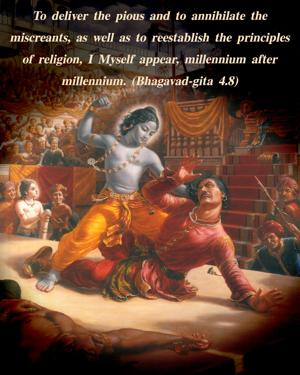
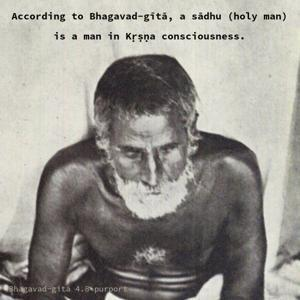
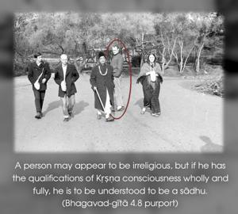
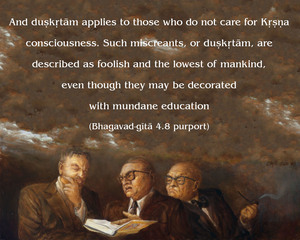

To deliver the pious and to annihilate the miscreants, as well as to reestablish the principles of religion, I Myself appear, millennium after millennium.




According to Bhagavad-gītā, a sādhu (holy man) is a man in Kṛṣṇa consciousness. A person may appear to be irreligious, but if he has the qualifications of Kṛṣṇa consciousness wholly and fully, he is to be understood to be a sādhu. And duṣkṛtām applies to those who do not care for Kṛṣṇa consciousness. Such miscreants, or duṣkṛtām, are described as foolish and the lowest of mankind, even though they may be decorated with mundane education, whereas a person who is one hundred percent engaged in Kṛṣṇa consciousness is accepted as a sādhu, even though such a person may be neither learned nor well cultured. As far as the atheistic are concerned, it is not necessary for the Supreme Lord to appear as He is to destroy them, as He did with the demons Rāvaṇa and Kaṁsa. The Lord has many agents who are quite competent to vanquish demons. But the Lord especially descends to appease His unalloyed devotees, who are always harassed by the demoniac. The demon harasses the devotee, even though the latter may happen to be his kin. Although Prahlāda Mahārāja was the son of Hiraṇyakaśipu, he was nonetheless persecuted by his father; although Devakī, the mother of Kṛṣṇa, was the sister of Kaṁsa, she and her husband Vasudeva were persecuted only because Kṛṣṇa was to be born of them. So Lord Kṛṣṇa appeared primarily to deliver Devakī rather than kill Kaṁsa, but both were performed simultaneously. Therefore it is said here that to deliver the devotee and vanquish the demon miscreants, the Lord appears in different incarnations.
In the Caitanya-caritāmṛta of Kṛṣṇadāsa Kavirāja, the following verses (Madhya 20.263–264) summarize these principles of incarnation:
sṛṣṭi-hetu yei mūrti prapañce avatare
sei īśvara-mūrti ‘avatāra’ nāma dhare
māyātīta paravyome sabāra avasthāna
viśve avatari’ dhare ‘avatāra’ nāma
“The avatāra, or incarnation of Godhead, descends from the kingdom of God for material manifestation. And the particular form of the Personality of Godhead who so descends is called an incarnation, or avatāra. Such incarnations are situated in the spiritual world, the kingdom of God. When they descend to the material creation, they assume the name avatāra.”
There are various kinds of avatāras, such as puruṣāvatāras, guṇāvatāras, līlāvatāras, śakty-āveśa avatāras, manvantara-avatāras and yugāvatāras – all appearing on schedule all over the universe. But Lord Kṛṣṇa is the primeval Lord, the fountainhead of all avatāras. Lord Śrī Kṛṣṇa descends for the specific purpose of mitigating the anxieties of the pure devotees, who are very anxious to see Him in His original Vṛndāvana pastimes. Therefore, the prime purpose of the Kṛṣṇa avatāra is to satisfy His unalloyed devotees.
The Lord says that He incarnates Himself in every millennium. This indicates that He incarnates also in the Age of Kali. As stated in the Śrīmad-Bhāgavatam, the incarnation in the Age of Kali is Lord Caitanya Mahāprabhu, who spread the worship of Kṛṣṇa by the saṅkīrtana movement (congregational chanting of the holy names) and spread Kṛṣṇa consciousness throughout India. He predicted that this culture of saṅkīrtana would be broadcast all over the world, from town to town and village to village. Lord Caitanya as the incarnation of Kṛṣṇa, the Personality of Godhead, is described secretly but not directly in the confidential parts of the revealed scriptures, such as the Upaniṣads, Mahābhārata and Bhāgavatam. The devotees of Lord Kṛṣṇa are very much attracted by the saṅkīrtana movement of Lord Caitanya. This avatāra of the Lord does not kill the miscreants, but delivers them by His causeless mercy.